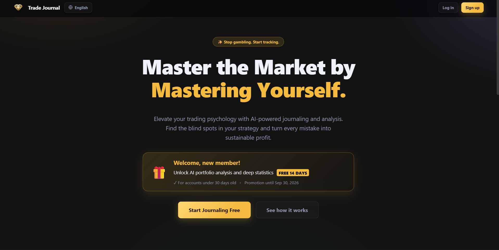
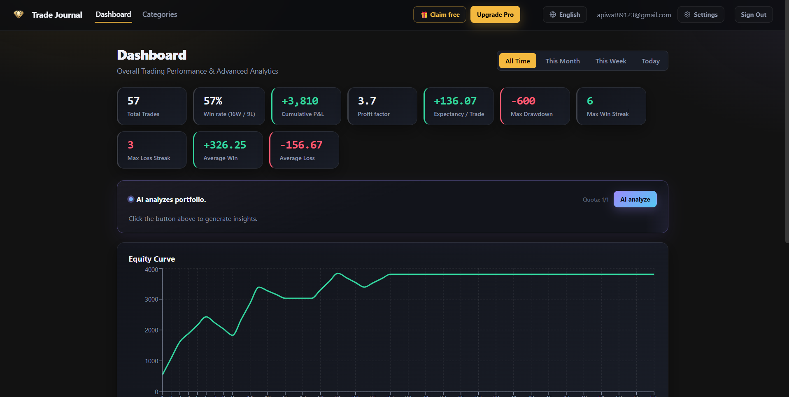

การบันทึกข้อมูลการเทรดด้วยเครื่องมือทั่วไปอย่าง Excel มีข้อจำกัดเรื่องการวิเคราะห์ข้อมูลเชิงลึก การแนบภาพกราฟ และขาดการสรุปผลแบบอัตโนมัติ ผมจึงต้องการสร้างระบบที่ช่วยให้เทรดเดอร์สามารถบันทึกข้อมูลได้สะดวกขึ้น และมีเครื่องมือช่วยค้นหาจุดแข็ง-จุดอ่อนของกลยุทธ์ตัวเองได้อย่างเป็นระบบ
พัฒนา Web Application ในรูปแบบ Micro-SaaS ที่รวมฟังก์ชันการจดบันทึกและการคำนวณสถิติสำคัญ (เช่น Win Rate, R:R, Drawdown) ไว้ในที่เดียว โดยมีฟีเจอร์ AI Coach ช่วยสรุปพฤติกรรมการเทรด พร้อมออกแบบระบบหลังบ้านให้รองรับโมเดล Subscription สำหรับผู้ใช้งานระดับ Pro
โปรเจกต์นี้เน้นการแก้ปัญหาที่มักพบในการทำเว็บระดับโปรดักชัน (Production-Ready) โดยแบ่งส่วนสำคัญดังนี้:
• Frontend & UX/UI: พัฒนาด้วย React และ React Router DOM ให้ความสำคัญกับประสบการณ์ใช้งาน (UX) ตั้งแต่การทำแบนเนอร์โปรโมชันแบบ Interactive ไปจนถึงการปรับแต่ง CSS โดยใช้ translate3d เพื่อดึง Hardware Acceleration มาช่วยให้แอนิเมชันลื่นไหล (60fps) แม้บนอุปกรณ์มือถือ
• Backend & Secure Authentication: ใช้ Supabase (PostgreSQL) ในการจัดการฐานข้อมูลและระบบสิทธิผู้ใช้งาน (Auth) มีการเขียน Logic ป้องกันอีเมลขยะ (Email Domain Whitelisting) ให้อนุญาตเฉพาะโดเมนจริง เช่น Gmail หรือ Outlook รวมถึงออกแบบ Flow การรีเซ็ตรหัสผ่านแบบ Redirect Token ที่ทำให้ผู้ใช้กลับเข้าสู่ระบบได้อย่างไร้รอยต่อ
• Payment Integration: บูรณาการ Stripe API สำหรับระบบตัดบัตรเครดิตอัตโนมัติ โดยใช้ Express.js รับ Webhook Event จาก Stripe เพื่ออัปเดตสิทธิ์ใช้งาน (Tier) ของผู้ใช้ในฐานข้อมูลแบบเรียลไทม์
• Data Analytics: พัฒนาระบบประมวลผลข้อมูลการเทรด พร้อมจำลอง AI Coach ที่สามารถแจ้งเตือนข้อมูลเชิงลึกได้ เช่น "พบสถิติการขาดทุนสะสม (Drawdown) สูงสุดในช่วง London Session วันศุกร์ แนะนำให้ปรับลดขนาด Position"
โปรเจกต์นี้ทำให้ผมได้ฝึกฝนทักษะการเป็น Full Stack Developer แบบครบวงจร ตั้งแต่การออกแบบ UI/UX ให้ใช้งานง่าย, การจัดการ Routing และ State ของแอปพลิเคชัน, การวางโครงสร้างฐานข้อมูลที่มีความปลอดภัย, ไปจนถึงการรับมือกับ 3rd-Party API (Stripe) ถือเป็นผลงานที่แสดงให้เห็นถึงความพร้อมในการพัฒนาซอฟต์แวร์ที่นำไปใช้งานจริงได้